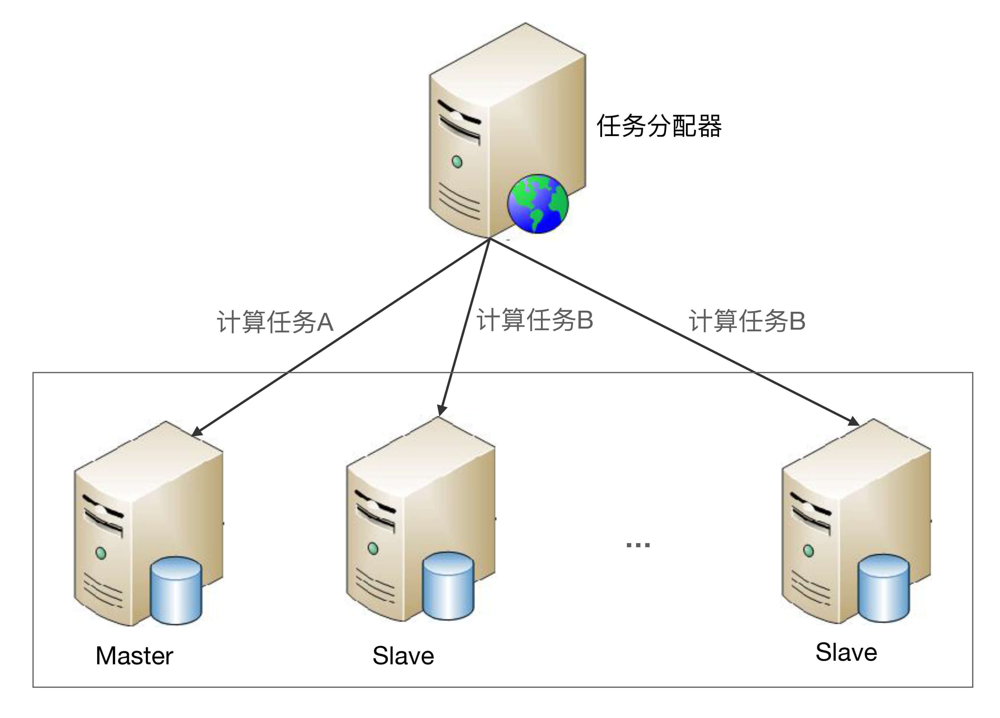

- 00 开篇词 照着做，你也能成为架构师！.md.html
- 01 架构到底是指什么？.md.html
- 02 架构设计的历史背景.md.html
- 03 架构设计的目的.md.html
- 04 复杂度来源：高性能.md.html
- 05 复杂度来源：高可用.md.html
- 06 复杂度来源：可扩展性.md.html
- 07 复杂度来源：低成本、安全、规模.md.html
- 08 架构设计三原则.md.html
- 09 架构设计原则案例.md.html
- 10 架构设计流程：识别复杂度.md.html
- 11 架构设计流程：设计备选方案.md.html
- 12 架构设计流程：评估和选择备选方案.md.html
- 13 架构设计流程：详细方案设计.md.html
- 14 高性能数据库集群：读写分离.md.html
- 15 高性能数据库集群：分库分表.md.html
- 16 高性能NoSQL.md.html
- 17 高性能缓存架构.md.html
- 18 单服务器高性能模式：PPC与TPC.md.html
- 19 单服务器高性能模式：Reactor与Proactor.md.html
- 20 高性能负载均衡：分类及架构.md.html
- 21 高性能负载均衡：算法.md.html
- 22 想成为架构师，你必须知道CAP理论.md.html
- 23 想成为架构师，你必须掌握的CAP细节.md.html
- 24 FMEA方法，排除架构可用性隐患的利器.md.html
- 25 高可用存储架构：双机架构.md.html
- 26 高可用存储架构：集群和分区.md.html
- 27 如何设计计算高可用架构？.md.html
- 28 业务高可用的保障：异地多活架构.md.html
- 29 异地多活设计4大技巧.md.html
- 30 异地多活设计4步走.md.html
- 31 如何应对接口级的故障？.md.html
- 32 可扩展架构的基本思想和模式.md.html
- 33 传统的可扩展架构模式：分层架构和SOA.md.html
- 34 深入理解微服务架构：银弹 or 焦油坑？.md.html
- 35 微服务架构最佳实践 - 方法篇.md.html
- 36 微服务架构最佳实践 - 基础设施篇.md.html
- 37 微内核架构详解.md.html
- 38 架构师应该如何判断技术演进的方向？.md.html
- 39 互联网技术演进的模式.md.html
- 40 互联网架构模板：存储层技术.md.html
- 41 互联网架构模板：开发层和服务层技术.md.html
- 42 互联网架构模板：网络层技术.md.html
- 43 互联网架构模板：用户层和业务层技术.md.html
- 44 互联网架构模板：平台技术.md.html
- 45 架构重构内功心法第一式：有的放矢.md.html
- 46 架构重构内功心法第二式：合纵连横.md.html
- 47 架构重构内功心法第三式：运筹帷幄.md.html
- 48 再谈开源项目：如何选择、使用以及二次开发？.md.html
- 49 谈谈App架构的演进.md.html
- 50 架构实战：架构设计文档模板.md.html
- 51 如何画出优秀的软件系统架构图？.md.html
- 加餐｜业务架构实战营开营了.md.html
- 加餐｜单服务器高性能模式性能对比.md.html
- 加餐｜扒一扒中台皇帝的外衣.md.html
- 如何高效地学习开源项目 华仔，放学别走！ 第3期.md.html
- 新书首发 《从零开始学架构》.md.html
- 架构专栏特别放送 华仔，放学别走！ 第2期.md.html
- 架构专栏特别放送 华仔，放学别走！第1期.md.html
- 架构师必读书单 华仔，放学别走！ 第5期.md.html
- 架构师成长之路 华仔，放学别走！ 第4期.md.html
- 结束语 坚持，成就你的技术梦想.md.html
- 捐赠
27 如何设计计算高可用架构？
计算高可用的主要设计目标是当出现部分硬件损坏时，计算任务能够继续正常运行。因此计算高可用的本质是通过冗余来规避部分故障的风险，单台服务器是无论如何都达不到这个目标的。所以计算高可用的设计思想很简单：通过增加更多服务器来达到计算高可用。
计算高可用架构的设计复杂度主要体现在任务管理方面，即当任务在某台服务器上执行失败后，如何将任务重新分配到新的服务器进行执行。因此，计算高可用架构设计的关键点有下面两点。
1.哪些服务器可以执行任务
第一种方式和计算高性能中的集群类似，每个服务器都可以执行任务。例如，常见的访问网站的某个页面。
第二种方式和存储高可用中的集群类似，只有特定服务器（通常叫“主机”）可以执行任务。当执行任务的服务器故障后，系统需要挑选新的服务器来执行任务。例如，ZooKeeper的Leader才能处理写操作请求。
2.任务如何重新执行
第一种策略是对于已经分配的任务即使执行失败也不做任何处理，系统只需要保证新的任务能够分配到其他非故障服务器上执行即可。
第二种策略是设计一个任务管理器来管理需要执行的计算任务，服务器执行完任务后，需要向任务管理器反馈任务执行结果，任务管理器根据任务执行结果来决定是否需要将任务重新分配到另外的服务器上执行。
需要注意的是：“任务分配器”是一个逻辑的概念，并不一定要求系统存在一个独立的任务分配器模块。例如：
- Nginx将页面请求发送给Web服务器，而CSS/JS等静态文件直接读取本地缓存。这里的Nginx角色是反向代理系统，但是承担了任务分配器的职责，而不需要Nginx做反向代理，后面再来一个任务分配器。
- 对于一些后台批量运算的任务，可以设计一个独立的任务分配系统来管理这些批处理任务的执行和分配。
- ZooKeeper中的Follower节点，当接收到写请求时会将请求转发给Leader节点处理，当接收到读请求时就自己处理，这里的Follower就相当于一个逻辑上的任务分配器。
接下来，我将详细阐述常见的计算高可用架构：主备、主从和集群。
主备
主备架构是计算高可用最简单的架构，和存储高可用的主备复制架构类似，但是要更简单一些，因为计算高可用的主备架构无须数据复制，其基本的架构示意图如下：

主备方案的详细设计：
- 主机执行所有计算任务。例如，读写数据、执行操作等。
- 当主机故障（例如，主机宕机）时，任务分配器不会自动将计算任务发送给备机，此时系统处于不可用状态。
- 如果主机能够恢复（不管是人工恢复还是自动恢复），任务分配器继续将任务发送给主机。
- 如果主机不能够恢复（例如，机器硬盘损坏，短时间内无法恢复），则需要人工操作，将备机升为主机，然后让任务分配器将任务发送给新的主机（即原来的备机）；同时，为了继续保持主备架构，需要人工增加新的机器作为备机。
根据备机状态的不同，主备架构又可以细分为冷备架构和温备架构。
冷备：备机上的程序包和配置文件都准备好，但备机上的业务系统没有启动（注意：备机的服务器是启动的），主机故障后，需要人工手工将备机的业务系统启动，并将任务分配器的任务请求切换发送给备机。
温备：备机上的业务系统已经启动，只是不对外提供服务，主机故障后，人工只需要将任务分配器的任务请求切换发送到备机即可。冷备可以节省一定的能源，但温备能够大大减少手工操作时间，因此一般情况下推荐用温备的方式。
主备架构的优点就是简单，主备机之间不需要进行交互，状态判断和切换操作由人工执行，系统实现很简单。而缺点正好也体现在“人工操作”这点上，因为人工操作的时间不可控，可能系统已经发生问题了，但维护人员还没发现，等了1个小时才发现。发现后人工切换的操作效率也比较低，可能需要半个小时才完成切换操作，而且手工操作过程中容易出错。例如，修改配置文件改错了、启动了错误的程序等。
和存储高可用中的主备复制架构类似，计算高可用的主备架构也比较适合与内部管理系统、后台管理系统这类使用人数不多、使用频率不高的业务，不太适合在线的业务。
主从
和存储高可用中的主从复制架构类似，计算高可用的主从架构中的从机也是要执行任务的。任务分配器需要将任务进行分类，确定哪些任务可以发送给主机执行，哪些任务可以发送给备机执行，其基本的架构示意图如下：

主从方案详细设计：
- 正常情况下，主机执行部分计算任务（如图中的“计算任务A”），备机执行部分计算任务（如图中的“计算任务B”）。
- 当主机故障（例如，主机宕机）时，任务分配器不会自动将原本发送给主机的任务发送给从机，而是继续发送给主机，不管这些任务执行是否成功。
- 如果主机能够恢复（不管是人工恢复还是自动恢复），任务分配器继续按照原有的设计策略分配任务，即计算任务A发送给主机，计算任务B发送给从机。
- 如果主机不能够恢复（例如，机器硬盘损坏，短时间内无法恢复），则需要人工操作，将原来的从机升级为主机（一般只是修改配置即可），增加新的机器作为从机，新的从机准备就绪后，任务分配器继续按照原有的设计策略分配任务。
主从架构与主备架构相比，优缺点有：
- 优点：主从架构的从机也执行任务，发挥了从机的硬件性能。
- 缺点：主从架构需要将任务分类，任务分配器会复杂一些。
集群
主备架构和主从架构通过冗余一台服务器来提升可用性，且需要人工来切换主备或者主从。这样的架构虽然简单，但存在一个主要的问题：人工操作效率低、容易出错、不能及时处理故障。因此在可用性要求更加严格的场景中，我们需要系统能够自动完成切换操作，这就是高可用集群方案。
高可用计算的集群方案根据集群中服务器节点角色的不同，可以分为两类：一类是对称集群，即集群中每个服务器的角色都是一样的，都可以执行所有任务；另一类是非对称集群，集群中的服务器分为多个不同的角色，不同的角色执行不同的任务，例如最常见的Master-Slave角色。
需要注意的是，计算高可用集群包含2台服务器的集群，这点和存储高可用集群不太一样。存储高可用集群把双机架构和集群架构进行了区分；而在计算高可用集群架构中，2台服务器的集群和多台服务器的集群，在设计上没有本质区别，因此不需要进行区分。
对称集群
对称集群更通俗的叫法是负载均衡集群，因此接下来我使用“负载均衡集群”这个通俗的说法，架构示意图如下：

负载均衡集群详细设计：
- 正常情况下，任务分配器采取某种策略（随机、轮询等）将计算任务分配给集群中的不同服务器。
- 当集群中的某台服务器故障后，任务分配器不再将任务分配给它，而是将任务分配给其他服务器执行。
- 当故障的服务器恢复后，任务分配器重新将任务分配给它执行。
负载均衡集群的设计关键点在于两点：
- 任务分配器需要选取分配策略。
- 任务分配器需要检测服务器状态。
任务分配策略比较简单，轮询和随机基本就够了。状态检测稍微复杂一些，既要检测服务器的状态，例如服务器是否宕机、网络是否正常等；同时还要检测任务的执行状态，例如任务是否卡死、是否执行时间过长等。常用的做法是任务分配器和服务器之间通过心跳来传递信息，包括服务器信息和任务信息，然后根据实际情况来确定状态判断条件。
例如，一个在线页面访问系统，正常情况下页面平均会在500毫秒内返回，那么状态判断条件可以设计为：1分钟内响应时间超过1秒（包括超时）的页面数量占了80%时，就认为服务器有故障。
例如，一个后台统计任务系统，正常情况下任务会在5分钟内执行完成，那么状态判断条件可以设计为：单个任务执行时间超过10分钟还没有结束，就认为服务器有故障。
通过上面两个案例可以看出，不同业务场景的状态判断条件差异很大，实际设计时要根据业务需求来进行设计和调优。
非对称集群
非对称集群中不同服务器的角色是不同的，不同角色的服务器承担不同的职责。以Master-Slave为例，部分任务是Master服务器才能执行，部分任务是Slave服务器才能执行。非对称集群的基本架构示意图如下：
 非对称集群架构详细设计：
- 集群会通过某种方式来区分不同服务器的角色。例如，通过ZAB算法选举，或者简单地取当前存活服务器中节点ID最小的服务器作为Master服务器。
- 任务分配器将不同任务发送给不同服务器。例如，图中的计算任务A发送给Master服务器，计算任务B发送给Slave服务器。
- 当指定类型的服务器故障时，需要重新分配角色。例如，Master服务器故障后，需要将剩余的Slave服务器中的一个重新指定为Master服务器；如果是Slave服务器故障，则并不需要重新分配角色，只需要将故障服务器从集群剔除即可。
非对称集群相比负载均衡集群，设计复杂度主要体现在两个方面：
- 任务分配策略更加复杂：需要将任务划分为不同类型并分配给不同角色的集群节点。
- 角色分配策略实现比较复杂：例如，可能需要使用ZAB、Raft这类复杂的算法来实现Leader的选举。
我以ZooKeeper为例：
- 任务分配器：ZooKeeper中不存在独立的任务分配器节点，每个Server都是任务分配器，Follower收到请求后会进行判断，如果是写请求就转发给Leader，如果是读请求就自己处理。
- 角色指定：ZooKeeper通过ZAB算法来选举Leader，当Leader故障后，所有的Follower节点会暂停读写操作，开始进行选举，直到新的Leader选举出来后才继续对Client提供服务。
小结
今天我为你讲了几种常见的计算高可用架构，并分析了不同方案的详细设计，希望对你有所帮助。
这就是今天的全部内容，留一道思考题给你吧，计算高可用架构从形式上和存储高可用架构看上去几乎一样，它们的复杂度是一样的么？谈谈你的理解。
© 2019 - 2023 Liangliang Lee. Powered by gin and hexo-theme-book.